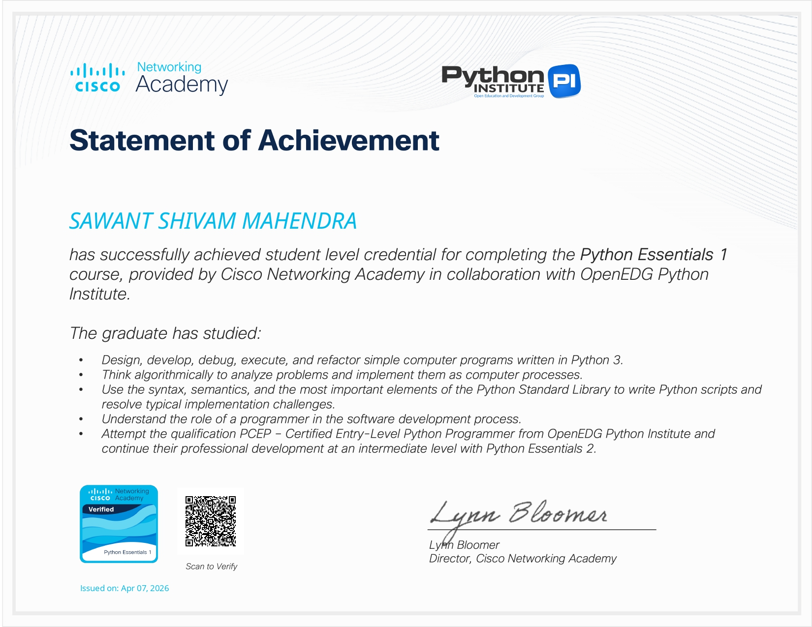
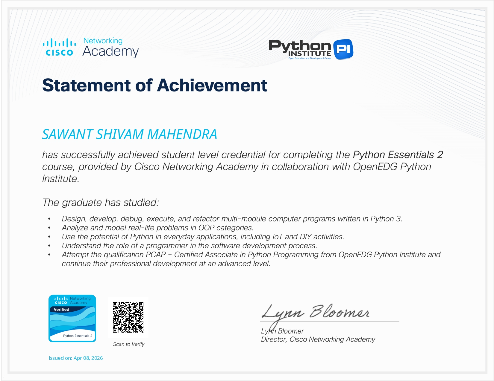
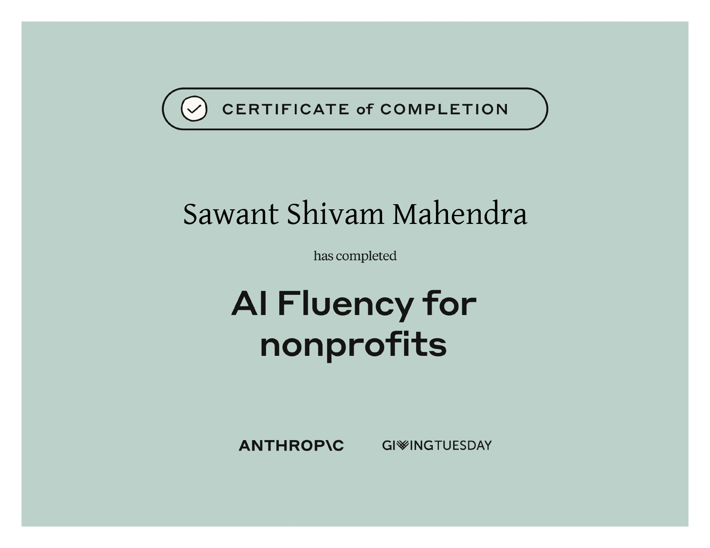
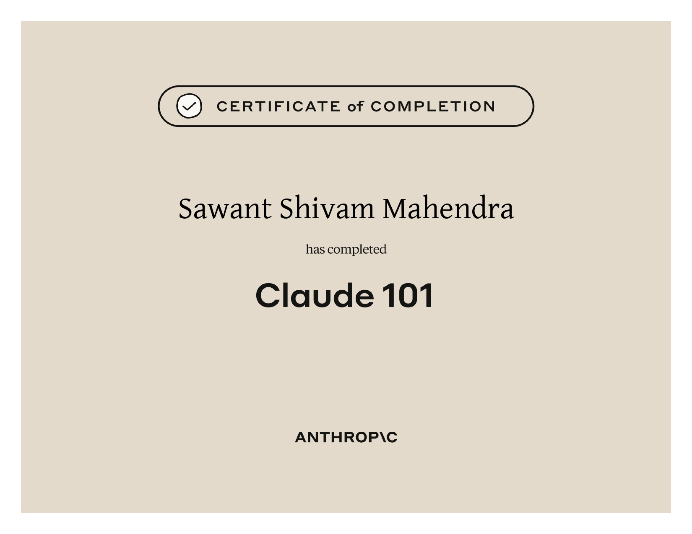
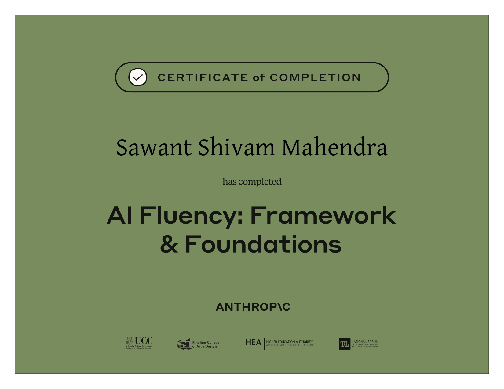
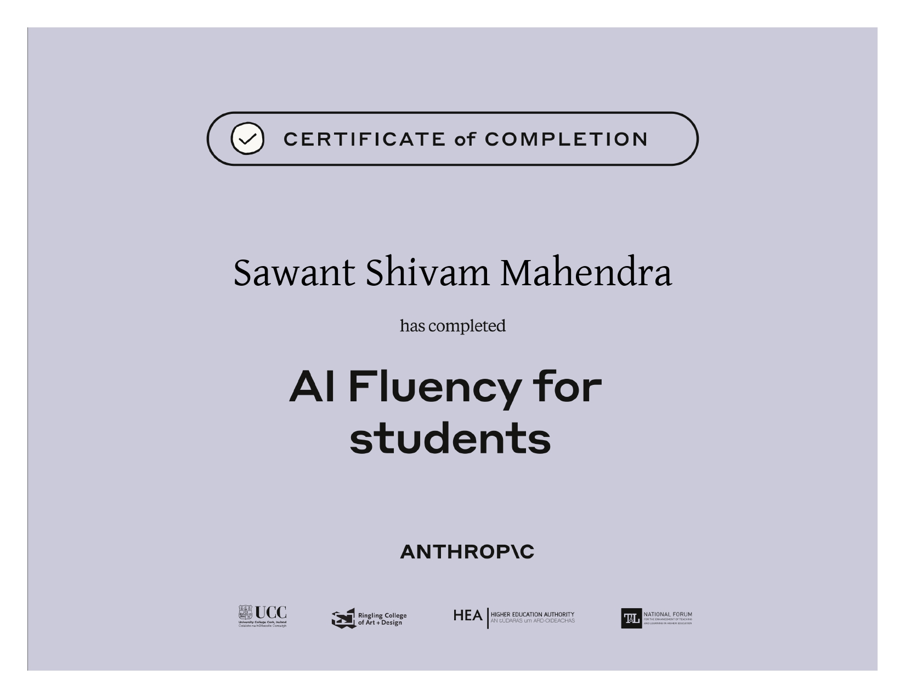

[ Cybersecurity · Ethical Hacking · Electronics ]
SHIVAM
About Me
Electronics student walking the path of the shinobi — mastering cybersecurity and ethical hacking, one jutsu at a time. Like Itachi, I see what others cannot.
Certificates

Certificate Title
Issuing Authority · 2024

Certificate Title
Issuing Authority · 2024

Certificate Title
Issuing Authority · 2024

Certificate Title
Issuing Authority · 2024

Certificate Title
Issuing Authority · 2024

Certificate Title
Issuing Authority · 2024
Projects
Laser Audio Transmitter
A wireless audio communication system developed using laser technology
to transmit sound signals over a distance. The project converts audio
signals into variations of laser light intensity using electronic
components such as transistors, resistors, capacitors, and a laser
diode. On the receiver side, a photoresistor or photodiode captures
the light signal and converts it back into audio.
This project demonstrates practical concepts of optical communication,
signal transmission, amplification, and analog electronics while
providing a low-cost implementation of secure point-to-point audio transfer.
Railway Track Condition Monitoring System (Using LoRa Module)
An intelligent railway safety system designed to monitor railway track
conditions using LoRa communication technology. The system focuses on
detecting track faults, cracks, or abnormal conditions and transmitting
the collected data wirelessly over long distances with low power consumption.
The project improves railway safety by enabling real-time monitoring,
faster fault detection, and reduced maintenance response time. It combines
wireless communication, embedded electronics, and sensor-based monitoring
for efficient infrastructure management.
Termux Ethical Hacking Environment
Built a lightweight cybersecurity and penetration testing environment
on Android using Termux and Ubuntu proot distribution. Configured tools
such as Recon-ng, Amass, Sherlock, Git, SSH integration, logging systems,
shell automation scripts, and custom aliases for efficient workflow management.
The setup focuses on portability, automation, Linux administration,
and practical ethical hacking workflows directly from a mobile device.